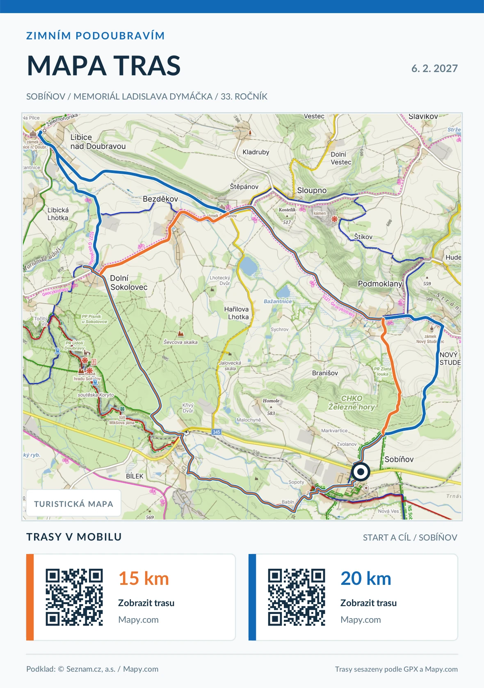
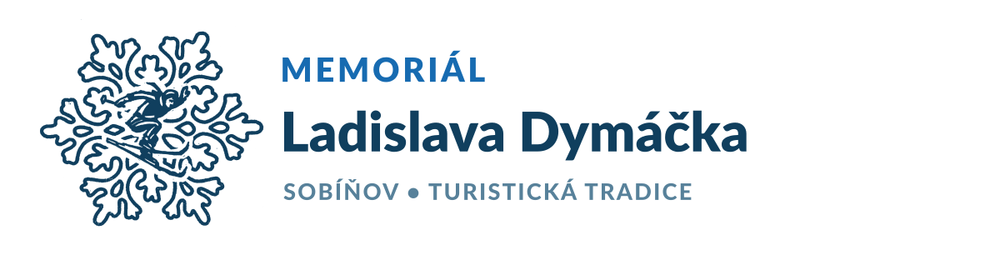

TRASA / 15
15KM
Kratší okruh
Sobíňov → Dolní Sokolovec → Podmoklany → Sobíňov
Obec Sobíňov × KČT Havlíčkův Brod POŘÁDAJÍ
Lyžařský přejezd / turistický pochod
Memoriál Ladislava Dymáčka
Tradiční zimní pochod a lyžařský přejezd mírně zvlněnou krajinou Podoubraví. Vyberte si jednu ze dvou tras, nebo se vydejte vlastní cestou.
01 / VYBER SI SVOU CESTU
Vyberte si vzdálenost, otevřete si trasu v Mapy.com nebo si stáhněte GPX do své navigace.
Kratší okruh
Sobíňov → Dolní Sokolovec → Podmoklany → Sobíňov
Delší okruh
Sobíňov → Bílek → Libice nad Doubravou → Nový Studenec → Sobíňov
Dáváte přednost vlastní cestě? Můžete si zvolit vlastní trasu podle svých představ a fyzických schopností. Do cíle můžete přijít odkudkoliv.
02 / PŘIPRAV SE NA CESTU
Oba okruhy na jedné turistické mapě. Stáhněte si mapu A5 pro tisk nebo si otevřete trasu v telefonu.
Turistický podklad: Mapy.com / Seznam.cz. Při navigaci doporučujeme řídit se především odkazem do Mapy.com nebo GPX. Před tiskem ověřte použití mapového podkladu.

Klepnutím zvětšíte mapu03 / DOBRÉ VĚDĚT
Od startu k autobusové zastávce a dále doleva do obce po modré turistické značce do Sopot. Od zastávky ČD doprava po červené turistické značce nebo po neznačené polní cestě pod tratí kolem hájenky na Bílek. Od zastávky ČD po zelené turistické značce k lesu. U okraje lesa doprava po neznačené asfaltové cestě lesem do Dolního Sokolovce.
Na silnici doprava a přes Bezděkov a Štěpánov do Podmoklan. U turistického rozcestníku doprava po modré turistické značce do cíle v kulturním domě v Sobíňově.
Na silnici doleva a po padesáti metrech doprava. Po místní asfaltové cestě dále kolem pily do Libice nad Doubravou. V Libici nad Doubravou dále po silnici přes Štěpánov a Podmoklany do Nového Studence. Za zámkem doprava polní cestou nad Sobíňov, pak již po modré turistické značce do cíle v kulturním domě.
04 / OZVI SE NÁM
